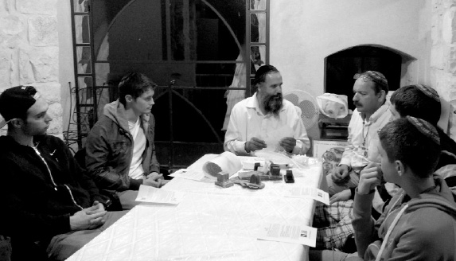

A Bar Mitzva and Wedding in One Week
The Center for Kabbala, which is run by R’ Eyal Reiss, is not your typical Chabad house. It spreads the wellsprings of Chassidus, albeit in an atypical package.

The International Kabbala Center-Tzfas – the name sounds somewhat pompous, even discordant to a Chassid who grew up with Chassidus, but I know that surprises are in store for me as I interview the director, Rabbi Eyal Reiss.
I see a sign that directs me to where I want to go. When I walk into the building, I see an astonishing sight. Between the ground level gallery and the steps that lead upward is the twisted trunk of a fig tree, which is set into a paved floor.
This is a shlichus hub, although it is not called a Chabad House. Tens of thousands of people from all over the world walk in here every year. Individual tourists and groups, families and couples, religious and not-yet religious, Jews and non-Jews, and even Reform and Conservative Jews; people who would never step foot in a Chabad House will come here, pay for a visit, and be exposed to authentic Judaism or the Seven Noachide Laws. They will leave in amazement and enthusiasm, and are usually different from the way they came in.
TZFAS
The first group of the morning is already there, and R’ Reiss, a tall Chassid, greets them. While introducing himself and inviting them for Shabbos, he asks them for their names and hometowns. The forty or so people in their twenties and thirties are here from Ramat Gan. Most of them work in graphic design, advertising and market branding. I can’t imagine why a group like this would come from “enlightened” Tel Aviv to out-of-the way Tzfas in order to experience Kabbala. But the fact is that they are here in order to experience, taste, broaden their horizons, and – who knows – maybe get themselves to think out of the box.
First, in order to plug into the mystical Tzfas aura, the lights of the main hall are dimmed. A professional film takes us on a virtual tour of Tzfas. With stunning photos accompanied by heartrending Chabad niggunim, we learn of the deep significance of kabbalistic Tzfas. Along with the moving pictures that flash by, words appear on the screen cleverly synchronized with the images which say, “The early sages spoke about one, unique, lofty place where the gates of wisdom are opened. Deep within the soul … they gathered here from all parts of the globe in order to discover the secret which was hidden in the depths of the soul of creation – the Kabbala. They sought the inner significance of Tzfas, from the root meaning hidden. This is the place where you can uncover the secrets of the hidden wisdom.
“Tzfas is from the root meaning lookout. From here, you can look out and see the expanse of time and place.
“Tzfas from the root meaning anticipation … it is the city which anticipates and arouses the anticipation for Moshiach and the redemption of the Jews and the world. Tzfas is from the word meaning north. It is the northernmost city of the four holy cities of Eretz Yisroel.”
The film is professionally done with the highest standards of film-making and editing. Darkened and lightened pictures alternate on the screen. They underscore the message which they intend to convey: “Tzfas, city of the spirit, will also illuminate the path for you, the path to your soul. Here you can ignite the spark that will light up the way for you and your surroundings. From the pure place of the soul, the wellsprings of Redemption and unity will go forth.”
The lights come back on. People look towards the doorway where R’ Chaim Komer of the Lubavitcher community in Tzfas appears. He wears his Klezmer-Chassidic cap. When he combines song with stories, jaws drop, hearts connect, and minds are purified.
REVELATION IN THE MIDST OF A TOUR
When I asked R’ Reiss why irreligious youth come for a spiritual experience, he smiles. He himself is originally from Tel Aviv. Until 22 years ago, he looked just like those young people. He definitely understands where they are coming from.
His fascinating life and astounding kiruvim from the Rebbe when he was in 770 in 5753 require a separate article. In the meantime, I try to understand why groups from Eretz Yisroel and the world, both Jews and non-Jews, come to Tzfas altogether, and to the International Center for Kabbala in particular.
“We invest a lot in terms of professionalism. We are very particular that every detail in the program be professional, interesting, and of as high a quality and of elegance as possible. We offer tourists packages, which include pampered lodgings in quaint rooming houses, lavish meals, and professional guides trained by us. The same is true for the spiritual side of things – the media, lecturers, content and artists. When people see that you are professional, they are receptive to you; you are considered an authority in the world of tourist attractions. Any tourist who comes here sees that we are super-professional. That is why he is not merely willing to come here, but it is what he was looking to buy and experience from the outset.
“Sometimes, it seems to shluchim that the ‘keilim/vessels’ are a limitation on the ‘oros/lights’ of the outreach. The truth is that the keilim the shliach uses not only do not interfere, but serve as powerful leverage to brand the product. We use all the advanced and technological tools there are. We offer tourist packages for Kabbala, self-actualization workshops, and all kinds of concepts borrowed from New Age terminology, which unfortunately tend to lead many astray into all sorts of terrible things. We use the same terms with the same definitions, but unlike those nice packages which contain nothing in the best cases and idol worship in the worst cases, we provide a Chassidic remedy which has been proven to be fascinating, effective and compelling.”
Our conversation was interrupted by a small group of eight people, most of them German gentiles. They came to see what Judaism is all about. Their first stop is the second floor where a friendly sofer awaits them. He tells them about how t’fillin, Sifrei Torah and mezuzos are written, and about the significance of the “mind ruling the heart,” which is represented by the donning of t’fillin.
The tour of the Old City doesn’t really interest them; they came to learn, to experience Judaism and what it signifies. They will eat lunch here and watch a video about Kabbala and then listen to a lecture.
The Jewish men want to put on t’fillin and one of the women asks to speak with the rabbi-kabbalist.
“Rabbi, I have many troubles in my life. What tikkun do you recommend for me?” R’ Reiss, being Jewish, responds with a question.
“Are you Jewish?”
“No,” she says. “I’m only one eighth Jewish because the father of the father of my grandfather was Jewish.”
“And your mother?” inquires R’ Reiss.
“She isn’t Jewish. Only my mother’s mother was Jewish,” she says, unwittingly dropping a bombshell.
R’ Reiss explained to her, “You are 100% Jewish!”
Before my very eyes a moving scene unfolds. This sixty year old woman, who just discovered her Jewishness, began to sob.
“Then does that means that my children are Jewish?” she asks emotionally.
When R’ Reiss says yes, she murmurs, “That’s why they always seemed angelic to me.”
R’ Reiss does not waste precious time. He immediately calls R’ Shlomo Bistritzky, the shliach in Hamburg where the woman lives, and makes the connection between them.
A GOOD HACHLATA MADE BY THE TOUR GUIDE
I wanted to talk to R’ Komer, the Chassidic Klezmer musician, to hear stories about people he had met in the course of his shlichus. Komer told me about a group of blind people who came for a visit. A special program was prepared for them, instead of the usual tour and films which they could not see. They heard an interesting lecture about Kabbala that provided them with a deeper understanding of what it means to use one’s soul powers that go beyond the physical senses. Komer was asked to play niggunim for them, which need to be heard and felt and not seen.
“At a certain point, the group was so enthused that they burst into joyous dance. It was so touching. We had to quickly move anything they could bump into out of the way. To my surprise, in the middle of the dancing one of the blind men came over to me and began touching my face. I didn’t know why he was doing this. It turned out he wanted the microphone in order to sing. He began singing and everyone joined in.
“Later on, the leader of the group told me about a fantastic miracle that just occurred. That blind man, who became blind in war towards the end of his army service, took his blindness very badly. He fell into a depression and felt he wasn’t worth anything. His situation grew so bad that he stopped talking. ‘You have no idea what the music did for him. He did not speak for seven years, and now he asked to sing in front of everyone!’”
Another story that Komer recounted took place about half a year ago. A group of tour guides had come to experience Tzfas and to see if they should bring groups there. One of them was a well-known person by the name of Amnon Gofer, a tour guide and researcher of the Galilee region.
“When he saw me, he told his friends about his previous encounter with me and about the insights he had at the time. He said:
“‘I was here two years ago at the Kabbala Center, when I heard Chaim playing. I invited him to play on a television program I produced. To my surprise, he didn’t jump at the opportunity of exposure, but made his acceptance conditional on being able to say Divrei Torah. He said that music without Judaism is like a body without a soul. At first, I refused.
“‘A week went by and I called him again. I told him that I was willing for him to give me the Divrei Torah he wanted to say and I would say them on the broadcast. Komer accepted. That was a unique program indeed. There was electricity in the air and I could see how right he was.
“‘Today, when I take tourists to visit the graves of tzaddikim, shuls, or even to hear Jewish music, I prepare Divrei Torah. I know that in order to provide people with a spiritual experience, you must connect it to Torah, to say some Chassidic thought or an idea from the parsha. Otherwise, it’s lacking.’”
The group of tourists from Ramat Gan were about to leave for a guided tour through the alleyways of the Old City and a visit to the ancient shuls. Before they left, they stopped at an interactive media center with a touch screen that is situated in the center of the room. Among the many attractions of this media center is a unique program in which you can input your Jewish name and your birthday and the computer will tell you the significance of the letters of the name, or it will find the verse where your name appears with letter skips within the parsha of the week you were born.
Moshiach and preparing for his coming are part and parcel of the work here. All the media presentations, information booklets and emails are geared towards the study and work needed to bring Moshiach to the world. The Rebbe’s prophecy of “Hinei Hinei Moshiach Bah” appears everywhere. It may not necessarily be in those words familiar to us but in phraseology understood by the tourists. Knowing that the Geula is closer than ever and is literally at the threshold is something palpable here.
Komer always talks about the Rebbe and Moshiach, and when R’ Reiss is asked whether we know who the Goel is he doesn’t hesitate to answer in the affirmative.
“EIN OD MILVADO” IN THE ALLEYWAYS OF TZFAS
I plan on coming back to experience “Chassidic Meditation,” but in the meantime, together with R’ Reiss, I hurry over to the Ruth Rimonim hotel. On our way, we meet the group of young people from Ramat Gan. I thought they would have wandered further afield by now, but it turns out that R’ Avi Broner’s t’fillin stand delayed them in one of the alleyways. Reiss and I continue to the hotel where a group of Jewish donors, a delegation from the Jewish Federation of Pennsylvania, awaits him. This group, which donates money to Jewish organizations in Eretz Yisroel, wanted to see and experience Eretz Yisroel for themselves. Among the other places they visited, like Yerushalayim, Tel Aviv, and Ein Hod (an artist’s colony in the Carmel region), they came to check out Tzfas, and particularly the center that represents spirituality.
This group of older Americans, who probably are not religiously observant, is blown away by everything connected to Judaism and spirituality. Their interest is enormous. They visit an artist whose works are all created in the spirit of Kabbala. This time, it’s an artist; other times it’s a potter or a glassblower, and other craftsmen. What they have in common is that they patiently explain their craft and the idea behind it, in addition to background of Kabbala and its correlation to life in the world of deeds; how it teaches you to be a better person and how to maximize your potential and connect to the “inner self” – in New Age lingo – and the Etzem HaNeshama in Chassidic terminology.
As they sit on chairs and mats in the art gallery of Avrohom Leventhal, they are amazed to hear concepts from the world of Kabbala, about soul powers and their physical implications that the world of Kabbala-Chassidus has to offer in the avoda on one’s personal character.
The artist displays a painting which has a combination of colors and shapes forming a series of rings and has the three words “Ein Od Milvado” written on it. While continuing to tell the story of his life and how he came to know his Creator, he explains what “Ein Od Milvado” means and how this concept “grabbed” him, that all creations, pleasures and wants are G-dly. Our job is to reveal this G-dliness within ourselves and the particles of creation with which we come in contact.
From there, they continue to the Kabbala Center where they will watch a video about the world of Kabbala and listen to a lecture. I go with Reiss who leads a group. By now, I am very curious to hear how this all began.
To be continued
A BAR MITZVA AND WEDDING IN ONE WEEK
Rabbi and Mrs. Reiss tell a story about a bar mitzva, bas mitzva and wedding for a single couple. This is how it goes.
Two years ago, a couple, diamond dealers of Russian origin who live in New York, contacted the Kabbala Center. They wanted to have a “kabbalistic wedding” in Tzfas. The couple had been studying Kabbala for several years in New York. When they visited the Kabbala Center website, they saw the option of making weddings. They had had only a civil marriage at that point, and they were intrigued.
When the date for the wedding, 14 Kislev, was arranged, they discovered extraordinary Hashgacha Pratis. The couple had married precisely forty years earlier, in a secret wedding in the Soviet Union! They had divorced a few years after that, and when they decided to remarry, they did it only as a civil marriage.
Since they had never had a bar and bas mitzva, these ceremonies were also arranged for them. The husband put t’fillin on for the first time in his life and had an aliya, and the woman lit Shabbos candles for the first time.
Mrs. Natalie Reiss prepared the kalla, teaching her the halachos of a Jewish home and gave her a private workshop on “The Power of Women” in light of Chassidus. On 14 Kislev 5771 the chuppa took place in the courtyard of the Ari shul. The wedding feast took place on the rooftop of the Kabbala Center.
Hundreds of residents of Tzfas who heard about the moving wedding participated. The emotionally charged belated bar mitzva, as well as the wedding in Tzfas, were covered by national newspapers, television stations, and Internet sites under the headline “It’s Never Too Late.”
After such a wedding, it’s no wonder that the couple and their mentors keep in touch and the newly wedded older couple are making significant progress in their religious observance.
Menachem Mendel Arad. "A Bar Mitzva and Wedding in One Week." Beis Moshiach, no. 863 (January 3, 2013).